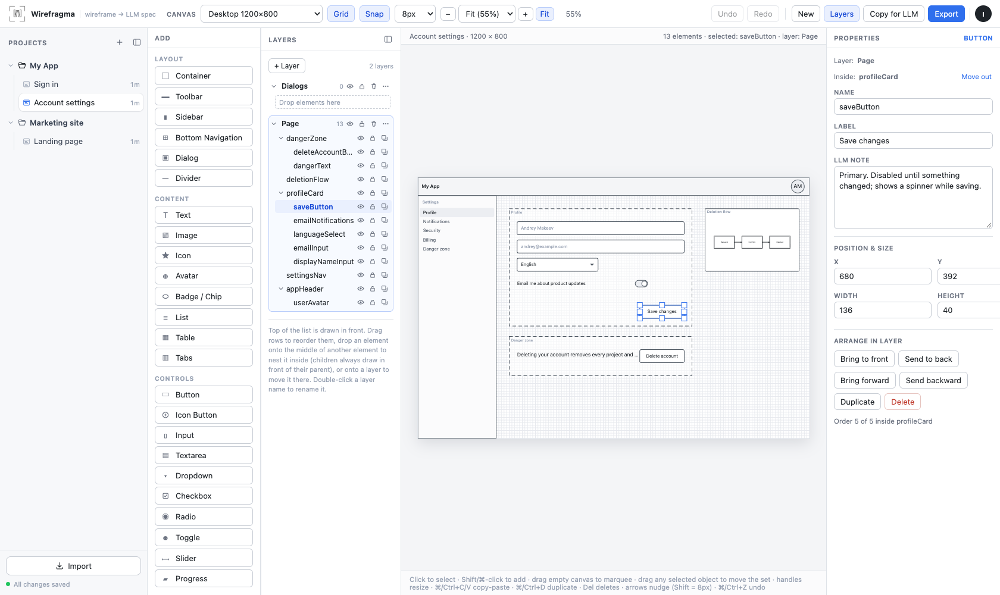

Documentation
Sketch the screen. Hand the spec to your LLM.
Wirefragma is a small visual wireframe editor whose output is written for language models: an ASCII sketch, a semantic element list, a spatial summary and the canonical project JSON — or, for signed-in users, direct access for coding agents over MCP.

What Wirefragma is
You place generic wireframe primitives — containers, toolbars, inputs, buttons, lists, tables, dialogs, a structured Canvas for small diagrams — and give each one an LLM note: what it does, its states, its data. Wirefragma then turns the screen into text a model can implement from.
It is deliberately not a design tool: no colours, fonts, rotation or auto-layout. The product is the specification.
Three ways to use it
| Mode | Where the wireframe lives | Good for |
|---|---|---|
| Guest | your browser (localStorage), one project | quick sketches, no sign-up, works on any static host |
| Signed in | the server's database: projects with many wireframes | several screens, several devices, autosave |
| Signed in + MCP | the same server storage, also reachable by agents | letting Claude Code, Codex or Cursor read and edit your wireframes |
Quick start
- Open the app and either sign in or choose Continue without an account.
- Add elements from the Add panel; drag, resize and nest them on the canvas.
- Write notes. Select an element and describe its behaviour in LLM note.
- Export. Click Copy for LLM and paste into your model — or give an agent MCP access and ask it to build from the wireframe directly.
What the LLM receives
# UI Wireframe: Sign in
## Screen
Mode: Mobile portrait — 390 × 844
...
## ASCII Wireframe
## UI Elements (one section per element: type, bounds, label, note, parent…)
## Spatial Summary (rule-based "what sits where")
## Editable Project Source
```ui-project
{ "version": 2, "title": "Sign in", "canvas": {…}, "layers": […], "elements": […] }
```The ui-project block is the canonical, lossless source: paste the Markdown back into Import and you get the editable wireframe again. Details in Export & import.